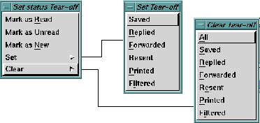

The
Message menu options related to message selection and
status are:

- Set
status ->
- Opens a cascading menu with selection options that
enable you mark selected messages as
Read,
Unread, or
New, and to reset or clear selected message status flags.
For example, you may start to read a message and not
have time to finish it. You can choose to restore the
message to
Unread or
New status, so that next time you
look at your mail you will be reminded to read it again.
See
Message Status Icons and Flags for the list of
message status flags.
NOTE:
The
Deleted flag cannot be altered via the
Set
status -> option. Use the
Message->Undelete
option to undelete a message and reset its
status.
- Select All
- Mark all messages in the message list as selected.
- Deselect All
- Reverse the selection of any or all selected messages.
- Search ...
- The
Search ... option enables you to perform searches for
specific mail message(s). You can perform a simple
search using a single search pattern or you can construct
a complex search expression using multiple search
patterns.
The
Search ... option is described in detail in the section
entitled
Using the Search Option.
Preceding Section: Delete Options
Following Section: Using the Search Option
Parent Section: Main Window Message Menu
Contents of Ishmail User's Guide